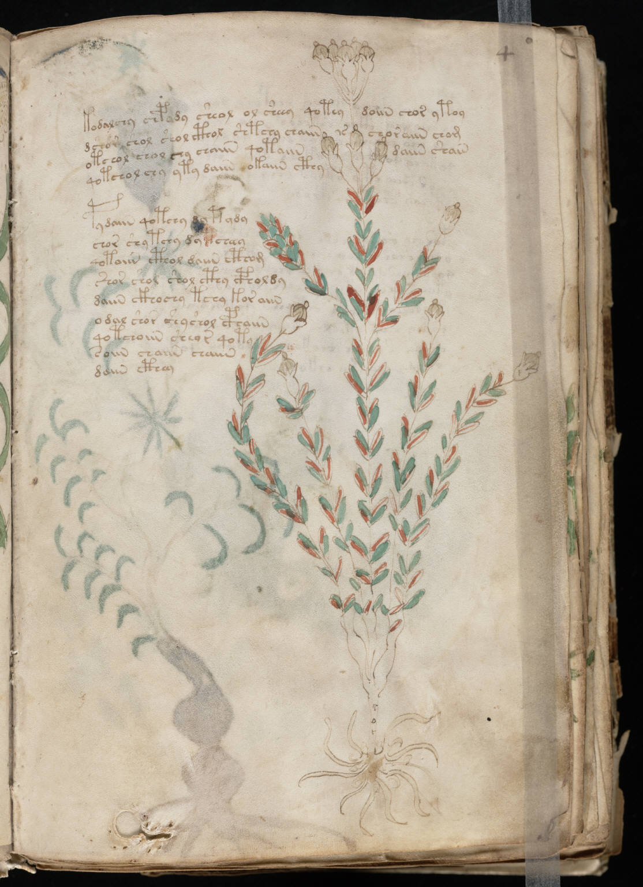

f4r
1kodalchy chpady sheol ol sheey qoteydoiin chor ytoy2dchor chol shol cthol shtchy chaiinschoraiin chom3otchol chol chy chaiin qotaiindaiin shain4qotchol chy yty daiin okaiin cthy5pydaiin qotchy dy tydy6chor shytchy dy tcheay7qotaiin cthol daiin cthom8shor shol shol cthy cpholdy9daiin ckhochy tchy koraiin10odal shor shyshol cphaiin11qotchoiin sheyr qoty12soiin chaiin chaiin13daiin cthey
